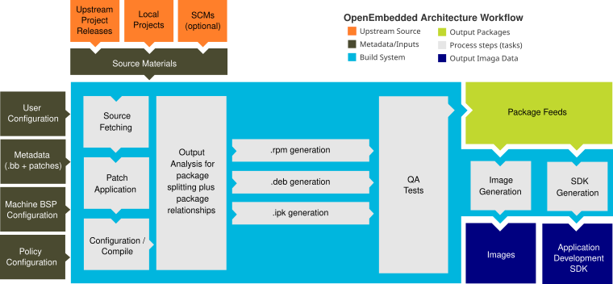

1 Introduzione a Yocto Project
1.1 Cos'è Yocto Project?
Yocto Project è un progetto collaborativo open source che aiuta gli sviluppatori a creare sistemi personalizzati basati su Linux, progettati per prodotti embedded indipendentemente dall'architettura hardware del prodotto. Yocto Project fornisce un set di strumenti flessibile e un ambiente di sviluppo che consente agli sviluppatori di dispositivi embedded di tutto il mondo di collaborare attraverso tecnologie, stack software, configurazioni e best practice condivise per creare queste immagini Linux personalizzate.
Migliaia di sviluppatori in tutto il mondo hanno scoperto che Yocto Project offre vantaggi sia nello sviluppo di sistemi che di applicazioni, sia in termini di archiviazione e gestione, sia per quanto riguarda le personalizzazioni in termini di velocità, ingombro e utilizzo della memoria. Il progetto è uno standard per la fornitura di stack software embedded. Il progetto consente la personalizzazione del software e lo scambio di build per diverse piattaforme hardware, nonché stack software che possono essere mantenuti e scalati.

Il resto di questa sezione illustra i vantaggi e le sfide legate a Yocto Project.
1.1.1 Caratteristiche
Ecco le caratteristiche e i vantaggi di Yocto Project:
Ampiamente Adottato nel Settore: Molti produttori di semiconduttori, sistemi operativi, software e servizi adottano e supportano Yocto Project nei loro prodotti e servizi. Per una panoramica della community di Yocto Project e delle aziende coinvolte, consultare le schede "COMMUNITY" e "ABOUT" nella pagina home di Yocto Project.
Indipendente dall'Architettura: Yocto Project supporta Intel, ARM, MIPS, AMD, PPC, RISC-V e altre architetture. La maggior parte dei Original Design Manufacturers (ODM) [produttori di design originali], dei Operating System Vendors (OSV) [fornitori di sistemi operativi] e dei produttori di chip creano e forniscono BSP che supportano il loro hardware. Se si dispone di silicio personalizzato, è possibile creare un BSP che supporti tale architettura. Consultare la documentazione Architetture e Funzionalità Supportate da Yocto Project per i dettagli sul livello di supporto per alcune di queste architetture.
Oltre a un ampio supporto architetturale, Yocto Project supporta pienamente una vasta gamma di dispositivi emulati da Quick EMUlator (QEMU).
Trasferimento Semplificato di Immagini e Codice: L'output di Yocto Project può essere facilmente trasferito tra architetture senza dover passare a nuovi ambienti di sviluppo. Inoltre, se è stato utilizzato Yocto Project per creare un'immagine o un'applicazione e non si è più in grado di supportarla, i fornitori commerciali di Linux elencati su https://www.yoctoproject.org/members/ e https://www.yoctoproject.org/about/participants/ potrebbero prenderla in carico e fornire supporto continuo.
Flessibilità: Le aziende utilizzano Yocto Project in molti modi diversi. Un esempio è la creazione di una distribuzione Linux interna come base di codice che l'azienda può utilizzare in più gruppi di prodotto. Attraverso la personalizzazione e il layering, un gruppo di progetto può sfruttare la distribuzione Linux di base per creare una distribuzione adatta alle proprie esigenze di prodotto.
Ideale per dispositivi Embedded e IoT con Risorse Limitate: A differenza di una distribuzione Linux completa, con Yocto Project è possibile creare esattamente ciò di cui si ha bisogno per i dispositivi embedded. È sufficiente aggiungere il supporto per le funzionalità o i pacchetti strettamente necessari al dispositivo. Per i dispositivi dotati di display, è possibile utilizzare componenti di sistema disponibili come X11, Wayland, GTK+, Qt, Clutter e SDL (tra gli altri) per creare un'esperienza utente ricca e intuitiva. Per i dispositivi sprovvisti di display o per i quali si desidera utilizzare framework UI alternativi, è possibile scegliere di non compilare questi componenti.
Complete Funzionalità della Toolchain: Le toolchain per le architetture supportate sono sufficienti per la maggior parte dei casi d'uso. Tuttavia, se l'hardware supporta funzionalità non incluse in una toolchain standard, è possibile personalizzarla facilmente specificando parametri di configurazione specifici della piattaforma. Inoltre, qualora fosse necessario utilizzare una toolchain di terze parti, i meccanismi integrati in Yocto Project lo consentono.
Meccanismo al éosto delle Politiche: Concentrarsi sul meccanismo piuttosto che sulle politiche garantisce la libertà di definire le politiche in base alle esigenze del proprio progetto, anziché adottare decisioni imposte da un fornitore di software di sistema.
Utilizza un Modello a Layer: L'infrastruttura a layer di Yocto Project raggruppa le funzionalità correlate in bundle separati. È possibile aggiungere gradualmente queste funzionalità raggruppate al progetto, a seconda delle necessità. L'utilizzo dei layer per isolare e raggruppare le funzionalità riduce la complessità e la ridondanza del progetto, consente di estendere facilmente il sistema, apportare personalizzazioni e mantenere le funzionalità organizzate.
Supporta le Build Parziali: È possibile compilare e ricompilare singoli pacchetti secondo necessità. Yocto Project realizza ciò tramite il suo schema di cache di stato shared (sstate) (Cache di Shared State). La possibilità di compilare ed eseguire il debug dei componenti singolarmente semplifica lo sviluppo del progetto.
Rilasci Secondo una Pianificazione Rigorosa: I rilasci principali avvengono con una cadenza semestrale, prevedibilmente a ottobre e aprile. Gli ultimi due rilasci includono aggiornamenti per risolvere vulnerabilità e punti deboli comuni. Questa prevedibilità è fondamentale per i progetti basati su Yocto Project e consente ai team di sviluppo di pianificare le attività.
Un Ricco Ecosistema di Individui e Organizzazioni: Per i progetti open source, il valore della community è molto importante. Forum di supporto, competenze e sviluppatori attivi che continuano a far progredire Yocto Project sono facilmente reperibili.
Riproducibilità Binaria: Yocto Project permette di essere molto precisi riguardo alle dipendenze e raggiunge percentuali molto elevate di riproducibilità binaria (ad esempio, 99,8% per
core-image-minimal). Quando le distribuzioni non specificano quali pacchetti includere e in quale ordine per supportare le dipendenze, altri sistemi di build possono includere pacchetti in modo arbitrario.Manifesto di Licenza: Yocto Project fornisce un license manifest da esaminare da parte di chi ha bisogno di tenere traccia dell'utilizzo delle licenze open source (ad esempio, i team legali).
1.1.2 Sfide
Ecco alcune sfide che si potrebbero incontrare durante lo sviluppo con Yocto Project:
Curva di Apprendimento Ripida: Yocto Project presenta una curva di apprendimento ripida e offre molti modi diversi per svolgere attività simili. Può essere difficile scegliere tra questi metodi.
Comprendere Quali Modifiche Apportare al Progetto Richiede Ricerca: Oltre alla semplice fase di tutorial, comprendere quali modifiche apportare al progetto specifico può richiedere una notevole quantità di ricerca e approfondimento. Per informazioni che aiutino a passare dalla fase di prova di Yocto Project al suo utilizzo per il progetto, consultare i documenti "Cosa sarebbe stato utile sapere sullo Yocto Project" e "Transizione a un ambiente personalizzato per lo sviluppo di sistemi" sul sito web di Yocto Project.
Il Flusso di Lavoro del Progetto Potrebbe Risultare Complesso: Il workflow di Yocto Project potrebbe risultare complesso per chi è abituato allo sviluppo software tradizionale per desktop e server. In un ambiente di sviluppo desktop, esistono meccanismi per scaricare e installare facilmente nuovi pacchetti, che in genere sono binari precompilati da server accessibili tramite Internet. Con Yocto Project, è necessario modificare la configurazione e ricompilare il progetto per aggiungere pacchetti aggiuntivi.
Lavorare in un Ambiente di Cross-build può Risultare Insolito: Quando si sviluppa codice da eseguire su una piattaforma target, la compilazione, l'esecuzione e il test sulla piattaforma stessa possono essere più veloci rispetto all'esecuzione di una build BitBake su un host di sviluppo e al successivo deployment dei binari sulla piattaforma target per il test. Sebbene Yocto Project supporti gli strumenti di sviluppo sulla piattaforma target, è comunque necessario integrare le modifiche nell'ambiente di build di Yocto Project. Yocto Project supporta un approccio intermedio che prevede di apportare modifiche al sistema di sviluppo all'interno dell'ambiente BitBake e quindi di distribuire sul sistema target solo i pacchetti aggiornati.
L'OpenEmbedded Build System di Yocto Project produce pacchetti in formati standard (ad esempio RPM, DEB e/o IPK). Se nell'immagine è stata inclusa la gestione dei pacchetti in fase di runtime, si possono distribuire questi pacchetti nel sistema in esecuzione sul sistema target utilizzando le utilità corrispondenti, come
rpm/dnf,dpkg/aptoopkg.I Tempi di Compilazione Iniziali Possono Essere Significativi: Tempi di compilazione iniziali lunghi sono purtroppo inevitabili a causa dell'elevato numero di pacchetti che vengono inizialmente compilati da zero per un sistema Linux completamente funzionante. Una volta completata la compilazione iniziale, tuttavia, il meccanismo di cache a shared-state (sstate) utilizzato da Yocto Project impedisce al sistema di ricompilare i pacchetti che non sono stati "modificati" dall'ultima compilazione. Il meccanismo sstate riduce significativamente i tempi per le compilazioni successive.
1.2 Il Modello a Layer di Yocto Project
Il Modello a Layer di Yocto Project è un modello di sviluppo per la creazione di applicazioni Linux embedded e IoT che distingue Yocto Project da altri semplici sistemi di build. Il modello a layer supporta simultaneamente la collaborazione e la personalizzazione. I layer sono repository che contengono insiemi di istruzioni correlate che indicano all'OpenEmbedded Build System cosa fare. È possibile collaborare, condividere e riutilizzare i layer.
I layer possono contenere modifiche a istruzioni o impostazioni precedenti in qualsiasi momento. Questa potente capacità di override consente di personalizzare i layer collaborativi o della community precedentemente forniti per adattarli ai requisiti del proprio prodotto.
Si utilizzano layer diversi per separare logicamente le informazioni nella build. Ad esempio, si potrebbero avere layer per BSP, GUI, configurazione della distribuzione, middleware o applicazione. Inserire l'intera build in un unico layer limita e complica la personalizzazione e il riutilizzo futuri. Isolare le informazioni in layer, d'altra parte, aiuta a semplificare le personalizzazioni e il riutilizzo futuri. Potrebbe essere allettante mantenere tutto in un unico layer quando si lavora su un singolo progetto. Tuttavia, maggiore è la modularità dei metadati, più facile sarà gestire le modifiche future.
Nota
Utilizzare i layer BSP (Board Support Package) dei produttori di semiconduttori quando possibile.
Familiarizzare con i Yocto Project Compatible Layers o con l'OpenEmbedded Layer Index. Quest'ultimo contiene più layer, ma sono meno universalmente validati.
I layer supportano l'inclusione di tecnologie, componenti hardware e software. La dicitura Yocto Project Compatible fornisce un layer minimo di standardizzazione che contribuisce a un solido ecosistema. La dicitura "YP Compatible" viene applicata a prodotti e componenti software appropriati, come BSP, altri layer compatibili con OpenEmbedded e progetti open source correlati, consentendo al produttore di utilizzare i badge e gli elementi di branding di Yocto Project.
Per illustrare come i layer vengano utilizzati per mantenere la modularità, consideriamo le personalizzazioni della macchina. Questo tipo di personalizzazioni risiede in genere in un layer speciale, anziché in uno generale, chiamato BSP Layer. Inoltre, le personalizzazioni della macchina dovrebbero essere isolate dalle ricette e dai metadati che supportano un nuovo ambiente GUI, ad esempio. Questa situazione crea un paio di layer: uno per le configurazioni della macchina e uno per l'ambiente GUI. È importante comprendere, tuttavia, che il layer BSP può comunque aggiungere modifiche specifiche della macchina alle ricette all'interno del layer dell'ambiente GUI senza inquinare il layer GUI stesso con tali modifiche specifiche della macchina. È possibile ottenere questo risultato tramite una ricetta che è un file di append BitBake (.bbappend), descritto più avanti in questa sezione.
Nota
Per informazioni generali sulla struttura dei layer BSP, consultare il Manuale del Board Support Package (BSP) di Yocto Project.
Source Directory contiene sia layer generali che layer BSP già pronti all'uso. È possibile identificare facilmente i layer inclusi in una release di Yocto Project nella directory dei sorgenti tramite i loro nomi. I layer hanno in genere nomi che iniziano con la stringa meta-.
Nota
Non è obbligatorio che il nome di un layer inizi con il prefisso meta-, ma è uno standard comunemente accettato nella community di Yocto Project.
Ad esempio, se si esamina la vista ad albero del repository openembedded-core, si vedranno diversi layer: meta, meta-skeleton e meta-selftest. Ciascuno di questi repository rappresenta un layer distinto.
Per le procedure su come creare layer, consultare la sezione "Comprendere e Creare i Layer" nel Manuale di Sviluppo dei Task di Yocto Project.
1.3 Componenti e Tool
Yocto Project utilizza una serie di componenti e strumenti impiegati dal progetto stesso, dagli sviluppatori del progetto e da coloro che utilizzano Yocto Project. Questi componenti e strumenti sono progetti open source e metadati separati dalla distribuzione di riferimento (Poky) e il OpenEmbedded Build System. La maggior parte dei componenti e degli strumenti viene scaricata separatamente.
Questa sezione fornisce una breve panoramica dei componenti e degli strumenti associati a Yocto Project.
1.3.1 Strumenti di Sviluppo
Ecco gli strumenti che aiutano a sviluppare immagini e applicazioni utilizzando Yocto Project:
devtool: Questo strumento da riga di comando è disponibile come parte dell'SDK estensibile (eSDK) e ne rappresenta il fondamento. Si può utilizzare
devtoolper compilare, testare e impacchettare il software all'interno dell'eSDK. Puoi utilizzare lo strumento per integrare facoltativamente il lavoro in un'immagine creata dal sistema di build OpenEmbedded.Il comando
devtoolutilizza una serie di sottocomandi che consentono di aggiungere, modificare e aggiornare le ricette. Come nel sistema di build OpenEmbedded, le "ricette" rappresentano pacchetti software all'interno didevtool. Quando si utilizzadevtool add, viene creata automaticamente una ricetta. Quando si utilizzadevtool modify, viene utilizzata la ricetta esistente specificata per determinare dove reperire il codice sorgente e come applicarvi le patch. In entrambi i casi, viene configurato un ambiente in modo che, durante la compilazione della ricetta, venga utilizzato un albero dei sorgenti sotto il proprio controllo, consentendo di apportare modifiche al codice sorgente a piacimento. Per default, sia le nuove ricette che il codice sorgente vengono inseriti in una directory "workspace" all'interno dell'eSDK. Il comandodevtool upgradeaggiorna una ricetta esistente in modo da poterla compilare con un set aggiornato di file sorgente.Si può leggere sul workflow di
devtoolnel Manuale di Sviluppo di Applicazioni Yocto Project e Software Development Kit (eSDK) nella sezione "Using devtool in Your SDK Workflow".Extensible Software Development Kit (eSDK): L'eSDK fornisce una toolchain di cross-sviluppo e librerie specifiche per il contenuto di una determinata immagine. L'eSDK semplifica l'aggiunta di nuove applicazioni e librerie a un'immagine, la modifica del codice sorgente di un componente esistente, il test delle modifiche sull'hardware target e l'integrazione con il resto del sistema di build OpenEmbedded. L'eSDK offre un'esperienza di toolchain arricchita dal potente set di comandi
devtoolottimizzati per l'ambiente Yocto Project.er informazioni sull'eSDK, consultare il manuale Manuale di Sviluppo di Applicazioni Yocto Project e Software Development Kit (SDK/eSDK).
Toaster: Toaster è un'interfaccia web per il sistema di build OpenEmbedded di Yocto Project. Toaster consente di configurare, eseguire e visualizzare informazioni sulle build. Per ulteriori informazioni su Toaster, consultare il manuale Manuale Utente di Toaster.
Estensione VSCode IDE: L'estensione Yocto Project BitBake per Visual Studio Code offre una ricca serie di funzionalità per lavorare con le ricette BitBake. L'estensione fornisce evidenziazione della sintassi, suggerimenti al passaggio del mouse e completamento automatico per i file BitBake, nonché per i linguaggi Python e Bash embedded. Ulteriori visualizzazioni e comandi consentono di esplorare, compilare e modificare le ricette in modo efficiente. Offre anche l'integrazione con l'SDK per la cross-compilazione e il debug tramite
devtool.Scoprire di più sull'estensione VS Code sulla pagina principale dell'estensione.
1.3.2 Strumenti di Produzione
Ecco alcuni strumenti utili per le attività di produzione con Yocto Project:
Auto Upgrade Helper: Questa utility, se utilizzata insieme all'OpenEmbedded Build System (BitBake e OE-Core), genera automaticamente gli aggiornamenti per le ricette basate su nuove versioni pubblicate a monte [upstream]. Per informazioni sulla configurazione, consultare Using the Auto Upgrade Helper (AUH).
Recipe Reporting System: Il sistema di segnalazione delle ricette tiene traccia delle versioni delle ricette disponibili per Yocto Project. Lo scopo principale del sistema è quello di aiutare a gestire le ricette mantenute e di offrire una panoramica dinamica del progetto. Il sistema di segnalazione delle ricette si basa su OpenEmbedded Layer Index, un sito web che indicizza i layer di OpenEmbedded-Core.
Patchwork: Patchwork è un fork di un progetto originariamente avviato da OzLabs. Il progetto è un sistema di tracciamento basato sul web, progettato per semplificare il processo di integrazione dei contributi in un progetto. Yocto Project utilizza Patchwork come strumento organizzativo per gestire le patch, che sono migliaia per ogni release.
AutoBuilder: AutoBuilder è un progetto che automatizza i test di build e il controllo qualità (QA). Utilizzando AutoBuilder, disponibile pubblicamente, chiunque può verificare lo stato del branch di sviluppo corrente dei repository principali (OpenEmbedded-Core (OE-Core) e BitBake).
Nota
AutoBuilder si basa su buildbot.
Uno degli obiettivi di Yocto Project è quello di essere leader nel settore open source con un progetto che automatizza le procedure di test e QA. In tal modo, il progetto incoraggia una comunità di sviluppatori che pubblica piani di QA e di test, li dimostra pubblicamente e promuove lo sviluppo di strumenti che automatizzano le procedure di test e QA a beneficio dell'intera comunità.
Per saperne di più sull'AutoBuilder utilizzato da Yocto Project, consultare la documentazione qui.
Pseudo: Pseudo è l'implementazione in Yocto Project di fakeroot, utilizzato per eseguire comandi in un ambiente che apparentemente dispone di privilegi di root.
Durante una build, può essere necessario eseguire operazioni che richiedono privilegi di amministratore di sistema. Ad esempio, potrebbe essere necessario definire la proprietà o i permessi dei file. Pseudo è uno strumento utilizzabile direttamente o tramite la variabile d'ambiente
LD_PRELOAD. Entrambi i metodi consentono di eseguire queste operazioni con successo anche senza privilegi di amministratore di sistema.Grazie a Pseudo, Yocto Project non necessita mai di privilegi di root per creare immagini per il sistema target.
Si possono trovare maggiori informazioni su Pseudo nella sezione "Fakeroot e Pseudo".
1.3.3 Componenti di Open-Embedded Build System
Ecco i componenti associati al OpenEmbedded Build System:
BitBake: BitBake è un componente fondamentale di Yocto Project e viene utilizzato dal sistema di build OpenEmbedded per creare immagini. Sebbene BitBake sia essenziale per il sistema di build, viene gestito separatamente da Yocto Project.
BitBake è un motore generico per l'esecuzione di task che consente di eseguire in modo efficiente e parallelo task di shell e Python, gestendo al contempo complesse dipendenze tra i task. In breve, BitBake è un motore di build che funziona tramite ricette scritte in un formato specifico per eseguire insiemi di task.
Per ulteriori informazioni su BitBake, consultare il Manuale Utente di BitBake.
OpenEmbedded-Core: OpenEmbedded-Core (OE-Core) è un layer comune di metadati (ovvero ricette, classi e file associati) utilizzato dai sistemi derivati da OpenEmbedded, incluso il Yocto Project. Sia Yocto Project che il Progetto OpenEmbedded mantengono OpenEmbedded-Core. È possibile trovare i metadati di OE-Core nei repository sorgente di OpenEmbedded Source Repositories.
Storicamente, Yocto Project integrava i metadati di OE-Core in tutto il sistema di riferimento dei repository sorgente di Yocto Project (Poky). Dopo la versione 1.0 di Yocto Project, Yocto Project e OpenEmbedded hanno concordato di collaborare e condividere un set di metadati di base comune (OE-Core), che contiene gran parte delle funzionalità precedentemente presenti in Poky. Questa collaborazione ha permesso di raggiungere un obiettivo di lunga data di OpenEmbedded: avere un core più strettamente controllato e di qualità garantita. I risultati si integrano perfettamente anche con l'obiettivo di Yocto Project di ottenere un numero ridotto di strumenti completi, anziché un gran numero di strumenti diversi.
Oggigiorno, il repository Poky non viene più aggiornato, poiché bitbake-setup è diventato il metodo preferito per configurare i repository e compilare la distribuzione Poky.
1.3.4 Pacchetti per Piattaforme Target
Ecco i componenti associati ai pacchetti per le piattaforme target:
Matchbox: Matchbox è un ambiente di base open source per X Window System, in esecuzione su piattaforme embedded non desktop come palmari, set-top box, chioschi e qualsiasi altro dispositivo in cui lo spazio sullo schermo, i meccanismi di input o le risorse di sistema siano limitati.
Matchbox è composto da una serie di applicazioni intercambiabili e opzionali che è possibile adattare a una specifica piattaforma non desktop per migliorarne l'usabilità in ambienti con risorse limitate.
È possibile trovare il codice sorgente di Matchbox in Yocto Project Source Repositories.
Opkg: Open PacKaGe management (opkg) è un sistema di gestione dei pacchetti leggero basato sul sistema di gestione dei pacchetti itsy (ipkg). Opkg è scritto in C e il suo funzionamento è simile a quello di Advanced Package Tool (APT) e Debian Package (dpkg).
Opkg è pensato per l'utilizzo su dispositivi Linux embedded e viene impiegato a tale scopo nei progetti OpenEmbedded e OpenWrt, nonché in Yocto Project.
Nota
Per quanto possibile, opkg mantiene la compatibilità con le versioni precedenti di ipkg e si conforma a un sottoinsieme del manuale delle policy di Debian relative ai file di controllo.
È possibile trovare il codice sorgente di opkg nei repository di Yocto Project Source Repositories.
1.3.5 Componenti Archiviati
La Build Appliance è un'immagine di macchina virtuale che consente di creare e avviare un'immagine Linux embedded personalizzata con Yocto Project utilizzando un sistema di sviluppo non Linux.
Storicamente, la Build Appliance era il secondo di tre metodi per utilizzare il Yocto Project su un sistema non nativo Linux.
Hob: Hob, ora deprecato e non più disponibile dalla versione 2.1 di Yocto Project, forniva un'interfaccia grafica rudimentale per Yocto Project. Toaster ha completamente sostituito Hob.
Build Appliance: Dopo Hob, è diventata disponibile la Build Appliance. Non è mai stato raccomandato di utilizzare la Build Appliance come ambiente di sviluppo di produzione quotidiano con Yocto Project. La Build Appliance era utile per provare lo sviluppo nell'ambiente di Yocto Project.
CROPS: In passato era una soluzione disponibile per lo sviluppo tramite Yocto Project su un sistema non nativo per Linux (https://github.com/crops/poky-container).
1.4 Metodi di Sviluppo
L'ambiente di sviluppo di Yocto Project prevede in genere un Build Host e un hardware target. Il Build Host viene utilizzato per creare immagini e sviluppare applicazioni, mentre l'hardware target viene utilizzato per eseguire il software distribuito.
Questa sezione fornisce un'introduzione alle opzioni o ai metodi di sviluppo disponibili per la configurazione del Build Host. A seconda delle preferenze di flusso di lavoro e del tipo di sistema operativo in esecuzione sul Build Host, sono disponibili diverse opzioni.
Nota
Per ulteriori dettagli sull'ambiente di sviluppo di Yocto Project, consultare il capitolo "L'Ambiente di Sviluppo di Yocto Project".
Host Linux Nativo: Di gran lunga l'opzione migliore per un Build Host. Un sistema con Linux come sistema operativo nativo consente di sviluppare software utilizzando direttamente il tool BitBake. È possibile eseguire tutti gli aspetti dello sviluppo da una normale shell in una distribuzione Linux supportata.
Per informazioni su come configurare un Build Host su un sistema che esegue Linux come sistema operativo nativo, consultare la sezione "Setting Up a Native Linux Host" nel Manuale di Sviluppo dei Task di Yocto Project.
OCI Containers: In genere, si utilizza un OCI container (ad esempio, con Docker o Podman), per configurare un Build Host che non esegue Linux (ad esempio, Microsoft Windows o macOS).
Windows Subsystem For Linux (WSL 2): È possibile utilizzare il Windows Subsystem For Linux versione 2 per configurare un Build Host con Windows 10 o versioni successive, oppure Windows Server 2019 o versioni successive.
Il Windows Subsystem For Linux consente a Windows di eseguire un kernel Linux reale all'interno di una macchina virtuale (VM) leggera.
Per informazioni su come configurare un Build Host con WSL 2, consultare la sezione "Setting Up to Use Windows Subsystem For Linux (WSL 2)" nel Manuale di Sviluppo dei Task di Yocto Project.
Toaster: Indipendentemente dal sistema operativo in esecuzione sul Build Host, è possibile utilizzare Toaster per sviluppare software con Yocto Project. Toaster è un'interfaccia web per il OpenEmbedded Build System di Yocto Project. L'interfaccia consente di configurare ed eseguire le build. Le informazioni relative alle build vengono raccolte e memorizzate in un database. È possibile utilizzare Toaster per configurare e avviare build su più server di build remoti.
Per informazioni su Toaster e sul suo utilizzo, consultare la documentazione Manuale Utente di Toaster.
Utilizzo dell'Estensione VSCode: Si può usare l'estensione Yocto Project BitBake per Visual Studio Code per avviare le build BitBake tramite un'interfaccia grafica
Maggiori informazioni sull'estensione VS Code sulla pagina del marketplace dell'estensione
1.5 Distribuzione Embedded di Riferimento (Poky)
"Poky", che si pronuncia Pock-ee, è il nome della distribuzione di riferimento o kit del sistema operativo di riferimento di Yocto Project. Questa distribuzione di riferimento è rappresentata da un file di configurazione DISTRO che si trova in meta-poky.
Avvertimento
Sebbene Poky sia una specifica di distribuzione "completa", testata e sottoposta a QA, non è possibile utilizzarla così com'è per un prodotto finale.
Poky ha un ciclo di rilascio regolare e ben consolidato di sei mesi, descritto in dettaglio nel documento Rilasci di Yocto Project e Iter dei Rilasci Stabili del Manuale di Riferimento di Yocto Project.
1.6 Workflow del Sistema di Build OpenEmbedded
OpenEmbedded Build System usa un "workflow" per la generazione di immagini e SDK. La figura seguente illustra tale flusso di lavoro:


Ecco un breve riepilogo del "workflow":
Gli sviluppatori specificano architettura, policy, patch e dettagli di configurazione.
Il sistema di build recupera e scarica il codice sorgente dalla posizione specificata. Il sistema di build supporta metodi standard come i tarball o i sistemi di repository di codice sorgente come Git.
Una volta scaricato il codice sorgente, il sistema di build estrae i file in un'area di lavoro locale dove vengono applicate le patch ed eseguiti i passaggi comuni per la configurazione e la compilazione del software.
Il sistema di build installa quindi il software in un'area di staging temporanea dove viene utilizzato il formato del pacchetto binario selezionato (DEB, RPM o IPK) per creare il pacchetto del software.
Diversi controlli di qualità e di integrità vengono eseguiti durante l'intero processo di build.
Dopo la creazione dei file binari, il sistema di build genera un feed di pacchetti binari che viene utilizzato per creare l'immagine finale del file system root.
Il sistema di build genera l'immagine del file system e un SDK (Software Development Kit) personalizzato per lo sviluppo parallelo delle applicazioni.
Per una descrizione dettagliata di questo flusso di lavoro, consultare la sezione "Concetti del Sistema di Build OpenEmbedded".
1.7 Alcuni Termini di Base
Per imparare a usare Yocto Project, è utile conoscere alcuni termini fondamentali. Sebbene la sezione "Yocto Project Terms" del Manuale di Riferimento di Yocto Project contenga un elenco di termini, questa sezione fornisce le definizioni di alcuni termini utili per iniziare:
File di Configurazione: File che contengono definizioni globali di variabili, variabili definite dall'utente e informazioni sulla configurazione hardware. Questi file indicano al OpenEmbedded Build System cosa compilare e cosa includere nell'immagine per supportare una specifica piattaforma.
Extensible Software Development Kit (eSDK): Un SDK personalizzato per gli sviluppatori di applicazioni. Questo eSDK consente agli sviluppatori di integrare le proprie librerie e modifiche di programmazione nell'immagine, rendendo il codice disponibile ad altri sviluppatori di applicazioni. Per informazioni sull'eSDK, consultare il manuale Manuale di Sviluppo di Applicazioni Yocto Project e Software Development Kit (SDK/eSDK).
Layer: Una raccolta di metadati correlati, che può includere ricette, file di configurazione della macchina, file di configurazione della distribuzione e/o file di classe. I layer consentono di consolidare i metadati correlati per personalizzare la build. I layer isolano inoltre le informazioni utilizzate durante la compilazione per architetture multiple. I layer sono gerarchici e possono sovrascrivere le specifiche precedenti. È possibile includere un numero qualsiasi di layer disponibili da Yocto Project e personalizzare la build aggiungendo i propri layer. È possibile cercare i layer utilizzati all'interno di Yocto Project nell'Indice dei layer.
Per informazioni più dettagliate sui layer, consultare la sezione "Comprendere e Creare i Layer" nel Manuale di Riferimento di Yocto Project. Per una discussione specifica sui layer BSP, consultare la sezione "Layer BSP" nella Guida degli Sviluppatori di Board Support Packages (BSP) di Yocto Project.
Metadata: Un elemento chiave di Yocto Project sono i metadati, utilizzati per costruire una distribuzione Linux e contenuti nei file che il sistema di build OpenEmbedded analizza durante la creazione di un'immagine. In generale, i metadati includono ricette, file di configurazione e altre informazioni che si riferiscono alle istruzioni di build stesse, nonché i dati utilizzati per controllare cosa viene compilato e gli effetti della build. I metadati includono anche comandi e dati utilizzati per indicare quali versioni del software vengono utilizzate, da dove vengono ottenute e modifiche o aggiunte al software stesso (patch o file ausiliari) utilizzate per correggere bug o personalizzare il software per l'uso in una situazione particolare. OpenEmbedded-Core è un importante insieme di metadati validati.
Sistema di Build OpenEmbedded: I termini "BitBake" e "sistema di build" vengono talvolta utilizzati per indicare l'OpenEmbedded Build System.
BitBake è un gestore di task e un motore di esecuzione che analizza le istruzioni (ovvero le ricette) e i dati di configurazione. Dopo una fase di analisi, BitBake crea un albero delle dipendenze per ordinare la compilazione, pianifica la compilazione del codice incluso e infine esegue la creazione dell'immagine Linux personalizzata specificata (distribuzione). BitBake è simile al tool
make.Durante un processo di compilazione, il sistema di build tiene traccia delle dipendenze ed esegue una compilazione nativa o incrociata [cross] di ciascun pacchetto. Come primo passo in una configurazione di cross-compilazione, il framework tenta di creare una toolchain di cross-compilazione (ovvero un SDK estensibile) adatta alla piattaforma target.
OpenEmbedded-Core (OE-Core): OE-Core è un insieme di metadati composto da ricette di base, classi e file associati, pensati per essere comuni a molti sistemi derivati da OpenEmbedded, incluso Yocto Project. OE-Core è un sottoinsieme curato di un repository originale sviluppato dalla comunità OpenEmbedded, ridotto a un insieme più piccolo e centrale di ricette continuamente validate. Il risultato è un insieme di ricette di base rigorosamente controllato e di qualità garantita.
È possibile visualizzare i metadati nella directory
metadel Source Repositories di Yocto Project.Pacchetti: Nel contesto di Yocto Project, questo termine si riferisce all'output impacchettato di una ricetta prodotto da BitBake (ovvero una "baked recipe"). Un pacchetto è generalmente costituito dai binari compilati prodotti dai sorgenti della ricetta. Si "impacchetta" qualcosa eseguendola tramite BitBake.
Vale la pena notare che il termine "pacchetto" può, in generale, avere significati sfumati. Ad esempio, i pacchetti a cui si fa riferimento nella sezione "Pacchetti Richiesti per l'Host di Build" del Manuale di Riferimento di Yocto Project sono binari compilati che, una volta installati, aggiungono funzionalità alla distribuzione Linux host.
Un altro punto degno di nota è che storicamente, all'interno di Yocto Project, le ricette venivano chiamate pacchetti [package]; da qui l'esistenza di diverse variabili BitBake apparentemente denominate in modo errato (ad esempio, PR, PV e PE).
Poky: Poky è una distribuzione embedded di riferimento e una configurazione di test di riferimento. Poky fornisce quanto segue:
Una distribuzione funzionale di base (DISTRO) utilizzata per illustrare come personalizzare una distribuzione.
Un mezzo per testare i componenti di Yocto Project (ovvero, Poky viene utilizzato per validare Yocto Project).
Poky non è una distribuzione a livello di prodotto. Piuttosto, è un buon punto di partenza per la personalizzazione.
Ricetta: La forma più comune di metadati. Una ricetta contiene un elenco di impostazioni e task (ovvero istruzioni) per la creazione di pacchetti che vengono poi utilizzati per costruire l'immagine binaria. Una ricetta descrive da dove reperire il codice sorgente e quali patch applicare. Le ricette descrivono le dipendenze per le librerie o per altre ricette, nonché le opzioni di configurazione e compilazione. Le ricette correlate sono consolidate in un layer.